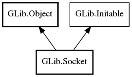

Socket
Object Hierarchy:

Description:
public class Socket :
Object,
Initable
Namespace: GLib
Package: gio-2.0
Content:
Properties:
Creation methods:
Methods:
- public Socket accept (Cancellable? cancellable = null) throws Error
- public bool bind (SocketAddress address, bool allow_reuse) throws Error
- public bool check_connect_result () throws Error
- public bool close () throws Error
- public IOCondition condition_check (IOCondition condition)
- public bool condition_timed_wait (IOCondition condition, int64 timeout, Cancellable? cancellable = null) throws Error
- public bool condition_wait (IOCondition condition, Cancellable? cancellable = null) throws IOError
- public bool connect (SocketAddress address, Cancellable? cancellable = null) throws Error
- public SocketSource create_source (IOCondition condition, Cancellable? cancellable = null)
- public ssize_t get_available_bytes ()
- public bool get_blocking ()
- public bool get_broadcast ()
- public Credentials get_credentials () throws Error
- public SocketFamily get_family ()
- public int get_fd ()
- public bool get_keepalive ()
- public int get_listen_backlog ()
- public SocketAddress get_local_address () throws Error
- public bool get_multicast_loopback ()
- public uint get_multicast_ttl ()
- public SocketProtocol get_protocol ()
- public SocketAddress get_remote_address () throws Error
- public SocketType get_socket_type ()
- public uint get_timeout ()
- public uint get_ttl ()
- public bool is_closed ()
- public bool is_connected ()
- public bool join_multicast_group (InetAddress group, bool source_specific, string? iface) throws Error
- public bool leave_multicast_group (InetAddress group, bool source_specific, string? iface) throws Error
- public bool listen () throws Error
- public ssize_t receive (uint8[] buffer, Cancellable? cancellable = null) throws Error
- public ssize_t receive_from (out SocketAddress address, uint8[] buffer, Cancellable? cancellable = null) throws Error
- public ssize_t receive_message (out SocketAddress address, InputVector[] vectors, SocketControlMessage[]? messages, int flags, Cancellable? cancellable = null) throws Error
- public ssize_t receive_with_blocking (uint8[] buffer, bool blocking, Cancellable? cancellable = null) throws Error
- public ssize_t send (uint8[] buffer, Cancellable? cancellable = null) throws Error
- public ssize_t send_message (SocketAddress? address, OutputVector[] vectors, SocketControlMessage[]? messages, int flags, Cancellable? cancellable = null) throws Error
- public ssize_t send_to (SocketAddress? address, uint8[] buffer, Cancellable? cancellable = null) throws Error
- public ssize_t send_with_blocking (uint8[] buffer, bool blocking, Cancellable? cancellable = null) throws Error
- public void set_blocking (bool blocking)
- public void set_broadcast (bool broadcast)
- public void set_keepalive (bool keepalive)
- public void set_listen_backlog (int backlog)
- public void set_multicast_loopback (bool loopback)
- public void set_multicast_ttl (uint ttl)
- public void set_timeout (uint timeout)
- public void set_ttl (uint ttl)
- public bool shutdown (bool shutdown_read, bool shutdown_write) throws Error
- public bool speaks_ipv4 ()